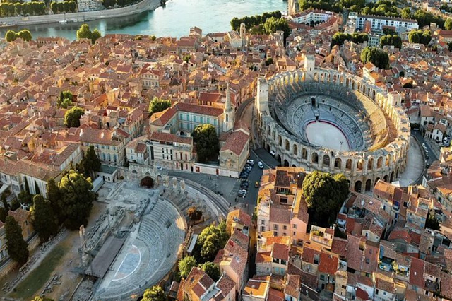
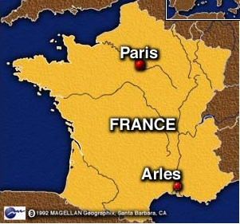
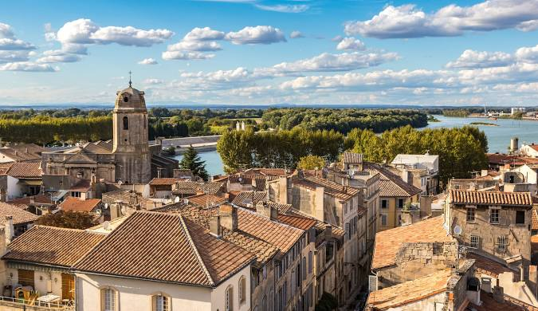
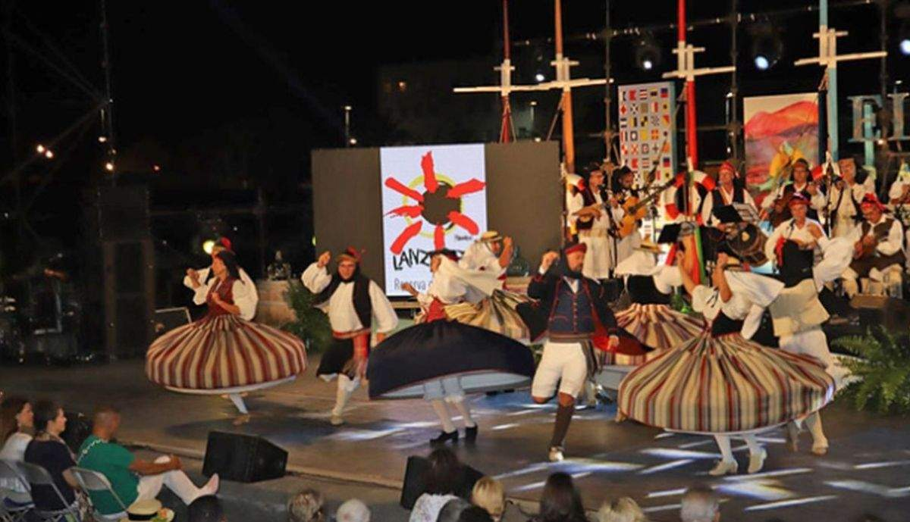
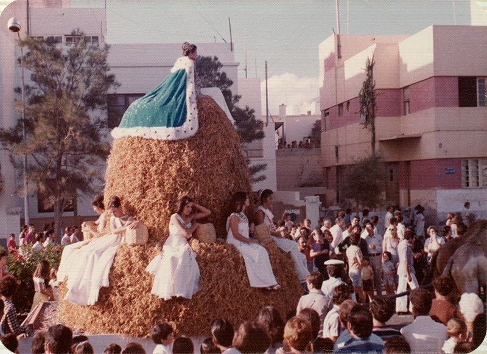
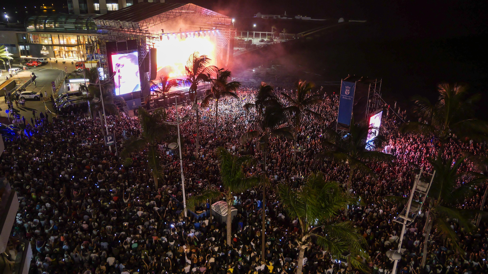
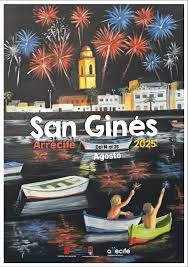
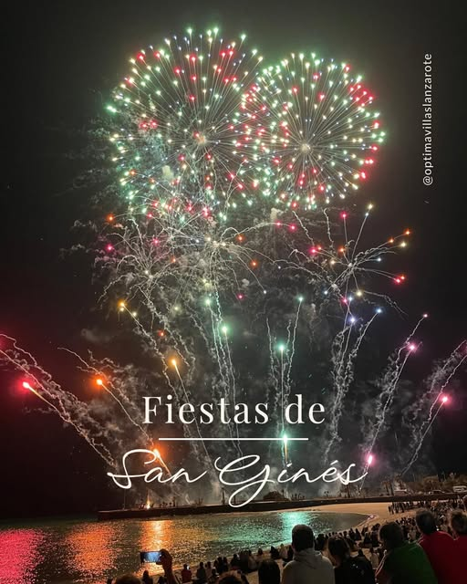

Discover the vibrant celebrations and cultural events that define
Arrecife and Lanzarote.
Town Festivals
San Ginés: The Patron Saint
Saint Genesius of Arles is a saint of the Catholic Church who was
born in Arles, France, on an unknown date and died by beheading in
either 303 or 308. According to contemporary sources, he was a
military notary or stenographer in the judicial archives
under the emperors Maximian and Diocletian. His feast day is
celebrated on August 25, and the dedication of his basilica in Arles
is commemorated on October 16. He is honored as the patron saint of
notaries, scribes, and secretaries.
Although still only a catechumen, he refused to transcribe
the edict of persecution against Christians decreed by Diocletian,
for which he was beheaded in the Trinquetaille district, at the foot
of a mulberry tree. The influx of pilgrims who tore off leaves and
branches destroyed the mulberry tree, so a marble column was erected
in its place (in France, he is also known as "Saint Genesius of the
Column"). The first church dedicated to him in the city was built
right there.
*Stenographer: The person that practices a high
velocity escriture system.
*Catechumen: A person who is being instructed in the
principles of Christianity before baptism.



Main Festivities
The city celebrates its main festivity on the third week of August
until the 25th, which is the main day, with a variety of ceremonies.
The festivities include a wide variety of activities for all ages,
such as concerts, open-air dances, children's workshops,
exhibitions, and traditional sports competitions.
Highlights of the Festival
Procession of San Ginés: One of the most important
events, when the image of the saint is carried through the streets
by local residents accompanied by musicians.
Fireworks Display: An emblematic event featuring
fireworks over El Reducto Beach, which marks the grand finale of the
celebrations.
Cultural Performances: International theater groups
and art exhibitions that showcase how tradition and modern culture
blend harmoniously in Arrecife.
Traditional Activities: Concerts, open-air dances,
children's workshops, and traditional sports competitions for all
ages.





A True Expression of Lanzarote's Identity
These celebrations not only pay tribute to the city's patron but
also reflect the warm and welcoming spirit of its people. The
festivities have evolved to include cultural performances,
international theater groups, and art exhibitions, creating a unique
blend of tradition and modern culture that is truly emblematic of
Arrecife.